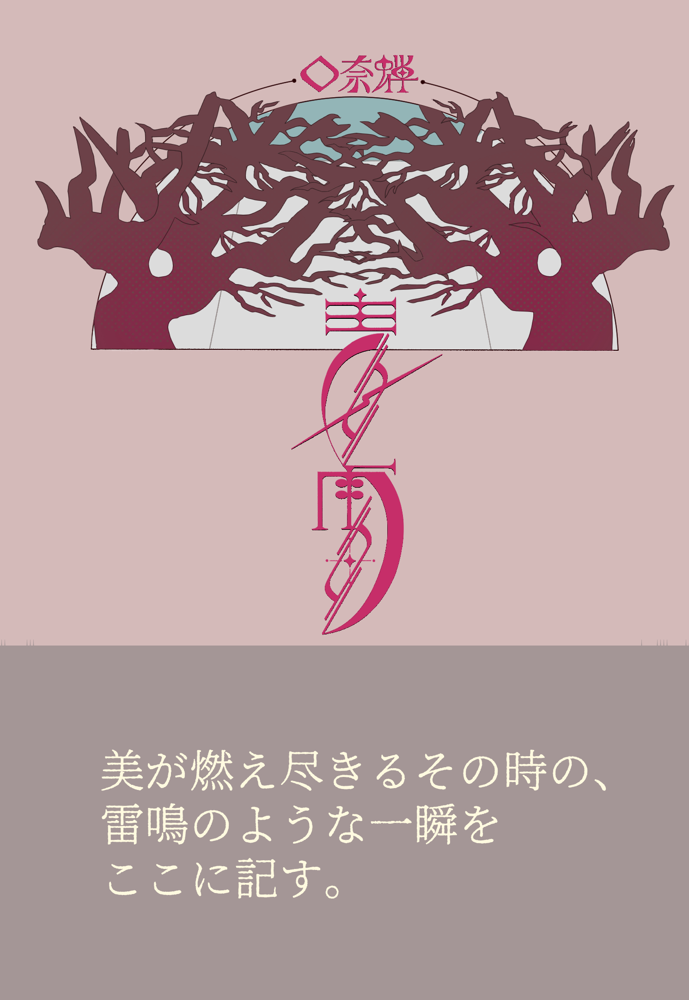

画商の新倉盈（にいくら・みつる）は大学時代の友にして『絵を描かない画家』楡島真悟（にれしま・しんご）に招かれ、彼のアトリエを訪れる。
10年ぶりの再会にもかかわらず、大学時代と変わらぬ彼の姿を不思議に思いつつも、彼の作品を鑑賞する盈は、やがて”芸術についての一大決戦”が
行われようとしていること、そして自分の招かれた訳が、楡島の絵を鑑賞するためなのだと知る。
果たしてその勝敗は、『絵を描かない画家』楡島が描いた絵とは……？
美の燃え尽きるその時の、雷鳴のような一瞬を書き留めた、口奈蝉の名刺的作品。